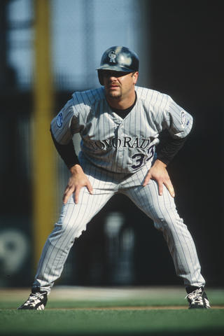

Home
Hall of Fame
'20 Player Quotes
'20 Player Fun Facts
The following is a list of fun facts from the 2020 Hall of Fame inductees.
Click each fact for a link to the source.
Drek Jeter is the only player to win both the All-Star Game MVP and the World Series MVP in the same year.

At the age of 16, Larry Walker was offered tryouts with Junior A hockey teams in Regina, Saskatchewan, and Kelowna, British Columbia, however was cut from both teams
Ted Simmons was named to 8 All-Star teams and was inducted by the Veteran's Committee to the Hall of Fame in 2020.
Marvin Miller was rejected numerous times before actually being inducted into the Hall of Fame.